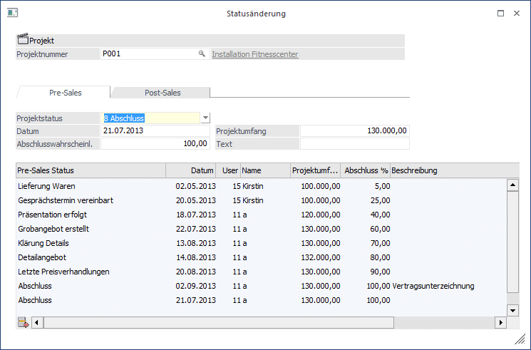
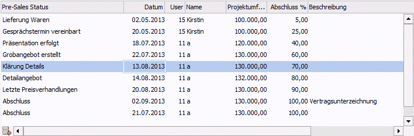
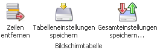
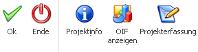

Die Statusänderung erfolgt über den Menüpunkt…
1 WinLine FAKT
1 Erfassen
1 Projektverwaltung
1 Statusänderung

Nach Eingabe bzw. Auswahl eines gültigen Projekts können die durchgeführten Tätigkeiten der Pre-Sales- und/oder Post-Sales-Phase erfasst werden. Dafür stehen zwei Register zur Verfügung:
ü Pre-Sales
In diesem Register
können Tätigkeiten und Aufgaben erfasst werden, die vor der eigentlichen
Verkaufsphase durchgeführt wurden (z.B. Vereinbarung eines
Gesprächstermins).
ü Post-Sales
Hier werden die
Tätigkeiten festgehalten, die während der Projektphase stattfinden (z.B.
Lieferung, Installation und Abnahme).
Hinweis
Die einzelnen Tätigkeiten/Aufgaben werden im Menüpunkt Projektstati (WinLine FAKT - Projektverwaltung) angelegt.
Es können nun die Details eines jeweiligen Projektstatus erfasst werden. Dafür stehen nach Auswahl des Projektstatus die Eingabefelder Abschlusswahrscheinlichkeit/Projektfortschritt (in %), Projektumfang und Beschreibung zur Verfügung. Mit dem Button „OK“ wird dieser Status in das Projekt übernommen.
Ø Projektstatus
Beim Status wird jeweils der zuletzt vergebene Status automatisch voreingestellt.
Ø Datum
Es wird das aktuelle Tagesdatum herangezogen. Eine Änderung ist möglich.
Ø Abschlusswahrscheinlichkeit / Projektfortschritt
Es wird der im Stamm hinterlegte Prozentsatz - aufgrund des zuvor ausgewählten Projektstatus - vorgeschlagen. Die Eingabe kann überschrieben werden.
Ø Projektumfang
Beim Projektumfang wird der Wert des zuletzt eingegebenen Schrittes vorgeschlagen. In der Bildschirmtabelle unterhalb der Eingabefelder werden alle bisher erfassten Stati angezeigt. Es gibt einen Entfernen-Button, mit dem ein Status gelöscht werden kann.
Tabelle
In der Bildschirmtabelle unterhalb der Eingabefelder wird die Historie des Projekts angezeigt: Wann welcher Status gesetzt wurde.

Das Editieren eine Status-Zeile ist möglich mit einem Doppelklick auf die Zeile. Damit werden die Werte der ausgewählten Zeile in die Eingabefelder oberhalb der Tabelle kopiert. Damit können die Felder Datum, Abschlusswahrscheinlichkeit/Projektfortschritt, Projektumfang und Text geändert werden.
Soll das Ändern ohne Speichern abgebrochen werden, kann dies mit Hilfe des Buttons "Editieren beenden" oder F4 erfolgen. Eine Änderung des Projektstatus ist hiermit nicht möglich.
Hinweis
Eine Statusänderung kann auch in den Stammdaten/Projektstamm erfolgen. Dort steht die Möglichkeit einer Statusänderung in den Reitern "Pre-Sales" und "Post-Sales" ebenso zur Verfügung. In diesem Fall sind die Projektnummer und der zweite Statusreiter gegrayed.
Das Projekt wird gelockt, da der letzte Status in den Projektstamm zurückgeschrieben wird. Das heißt zu diesem Zeitpunkt kann kein anderer Benutzer Änderungen im Projektstamm vornehmen.
Tabellenbuttons

Ø Zeilen entfernen
Eine markierte Zeile kann mit diesem Button gelöscht werden. Das Entfernen der Zeile in der Historienanzeige erfolgt, wenn die Meldung "Wollen Sie die Zeile wirklich löschen?" mit dem Button "Ja" beendet wird.
Ø Tabelleneinstellungen speichern
Die Spalten einer Tabelle können grundsätzlich an beliebige Positionen verschoben, bzw. in der Breite entsprechend angepasst werden. Durch Anwahl des Buttons "Tabelleneinstellungen speichern" werden die Einstellungen benutzerspezifisch gespeichert und bei dem nächsten Aufruf des Programmpunktes wieder vorgeschlagen.
Ø Gesamteinstellungen speichern
Im Gegensatz zu "Tabelleneinstellungen speichern" können mit "Gesamteinstellungen speichern" mehrere Tabellenaufbauten gespeichert und nach Wunsch geladen werden. Zusätzlich werden Sonderfunktionen der Tabelle (z.B. "Spalte gruppieren") ebenfalls bei der Speicherung bedacht.
Buttons

Ø Ok
Mit dem Buttons "Ok" bzw. der Taste F5 werden alle Angaben aus den Eingabefeldern gespeichert.
Ø Ende
Soll keine neue Projektstatus-Zeile angelegt werden, beendet man die Statusänderung mit dem Button "Ende" bzw. der Taste ESC.
Ø Projektinfo
Es wird die Projektauswertung aufgerufen und angezeigt.
Ø OIF anzeigen
Es wird im rechten Bereich das Basis OIF-Element für Projekte angezeigt.
Ø Projekterfassung
Mit Hilfe dieses Buttons wird die Projekterfassung aufgerufen. In der Projekterfassung ist die Erfassung der Budget- und Ist-Werte in den jeweiligen Registern möglich (nähere Informationen entnehmen Sie bitte dem Kapitel "Projekterfassung").